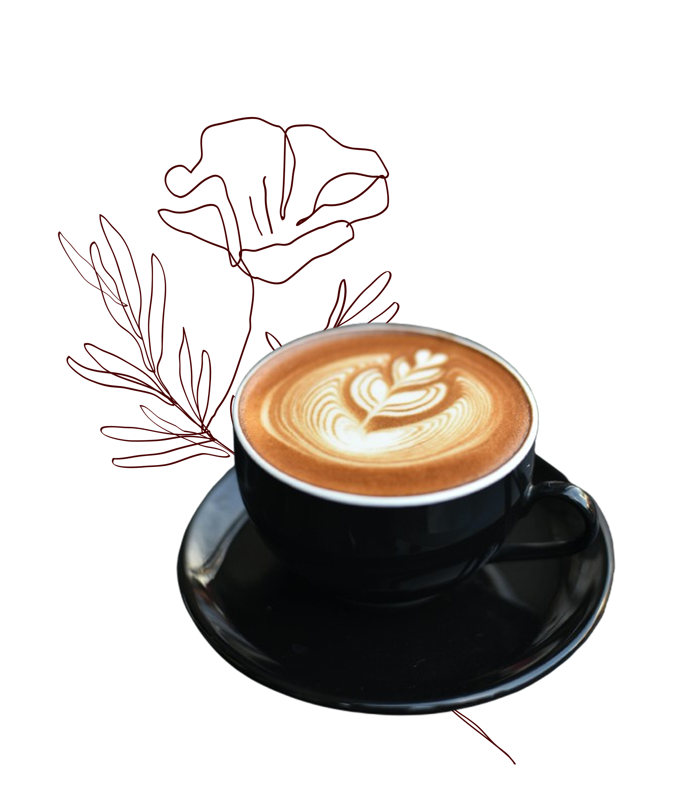
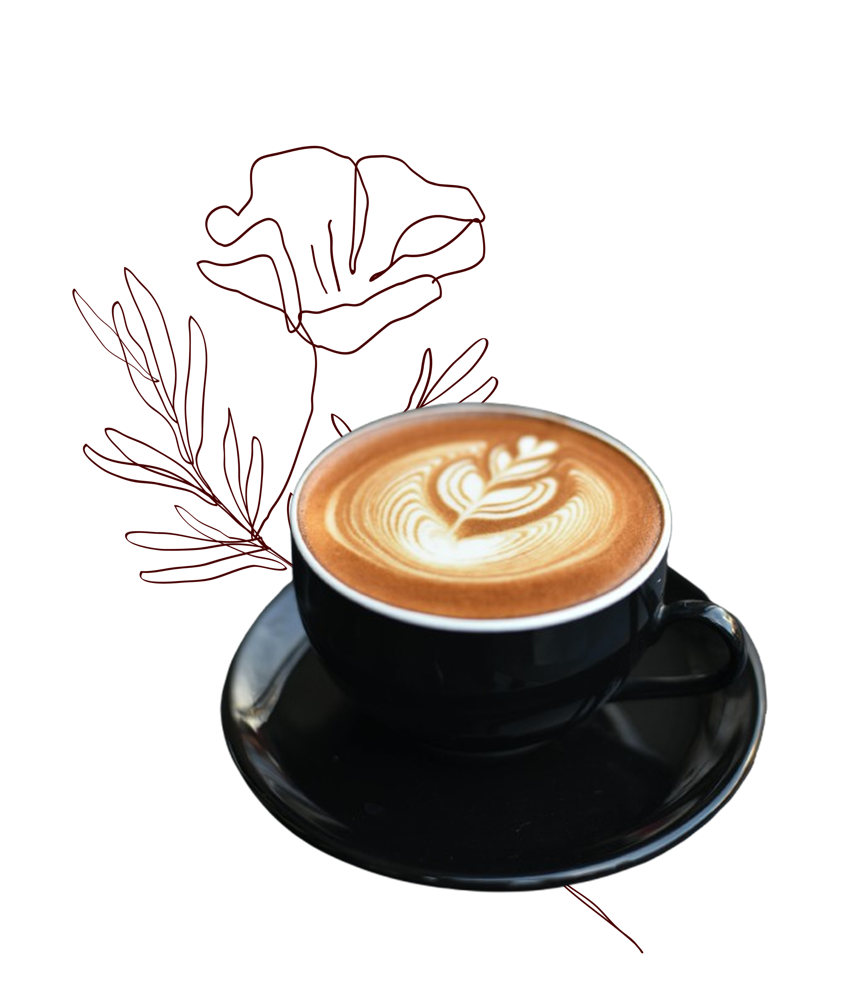

+6012-345 6789
+6012-345 6789
HOME
COFFEE
 

Our signature Coffee
Purpose: Learn how to brew the perfect cup of KopiDiam coffee at home
Coffee Type:Single-origin,small-lot, and specialty blends.
Skill Level: Beginner-friendly — perfect for those new to artisanal coffee.
Follow our step-by-step guide to bring KopiDiam’s premium flavors from bean to cup, sip by sip.
To brew KopiDiam coffee, you’ll need KopiDiam coffee beans, a grinder (manual or electric), a French press or pour-over device, a kettle, and a mug.
Learn More
Use KopiDiam single-origin or small-lot blend.
Learn More
Our signature Coffee
Purpose: Learn how to brew the perfect cup of KopiDiam coffee at home
Coffee Type:Single-origin,small-lot, and specialty blends.
Skill Level: Beginner-friendly — perfect for those new to artisanal coffee.
Follow our step-by-step guide to bring KopiDiam’s premium flavors from bean to cup, sip by sip.
To brew KopiDiam coffee, you’ll need KopiDiam coffee beans, a grinder (manual or electric), a French press or pour-over device, a kettle, and a mug.
Learn More
Use KopiDiam single-origin or small-lot blend.
Learn More
Method 1
Boil water and let it cool slightly (~92–96°C).
Place filter in dripper and rinse with hot water.
Add coffee to filter and gently shake to level.
Pour a little water to bloom for 30 seconds.
Slowly pour remaining water in circular motion until desired volume is reached.
Remove filter and serve.
You did it!
Take a moment for yourself and savor a cup of KopiDiam. Let the rich aromas, smooth flavors, and carefully crafted blends guide you to a quiet, mindful pause in your day. Whether you’re starting your morning or taking a mid-afternoon break, sip slowly, relax, and diam diam—because the best moments are often enjoyed quietly.
FOUNDER & CREATIVE DIRECTOR